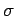
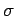
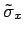
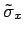
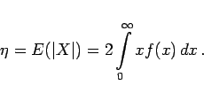
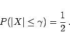
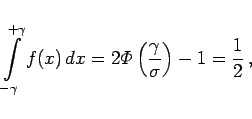
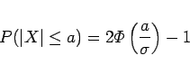

Inhalt Index DeskTop Bronstein

 Wahrscheinlichkeitsrechnung und Mathematische Statistik Theorie der Meßfehler Meßfehler und ihre Verteilung Fehlernormalverteilung
Wahrscheinlichkeitsrechnung und Mathematische Statistik Theorie der Meßfehler Meßfehler und ihre Verteilung Fehlernormalverteilung


Zur Charakterisierung der Breite der Fehlernormalverteilung werden außer der Streuung  bzw. der Standardabweichung , auch mittlerer quadratischer Fehler genannt, noch andere Parameter verwendet, wie das Genauigkeitsmaß
bzw. der Standardabweichung , auch mittlerer quadratischer Fehler genannt, noch andere Parameter verwendet, wie das Genauigkeitsmaß  , der mittlere Fehler
, der mittlere Fehler  und der wahrscheinliche Fehler
und der wahrscheinliche Fehler  .
.
Je schmaler die GAUSS-Kurve ist, desto größer ist die Genauigkeit (s. Abbildung).
Wenn für  die experimentell mit Hilfe von Meßwerten ermittelte Größe
die experimentell mit Hilfe von Meßwerten ermittelte Größe  bzw.  eingesetzt wird, charakterisiert das Genauigkeitsmaß die Genauigkeit der Meßmethode.
bzw.  eingesetzt wird, charakterisiert das Genauigkeitsmaß die Genauigkeit der Meßmethode.
|  | (16.196) |
|  | (16.197a) |
Daraus folgt
|  | (16.197b) |
wobei  die Verteilungsfunktion der normierten Normalverteilung ist.
die Verteilungsfunktion der normierten Normalverteilung ist.
|  | (16.198) |
die Wahrscheinlichkeit ausgerechnet werden, mit der der Fehler in das Intervall [-a,a] fällt.